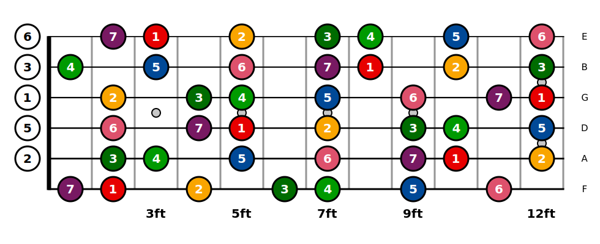
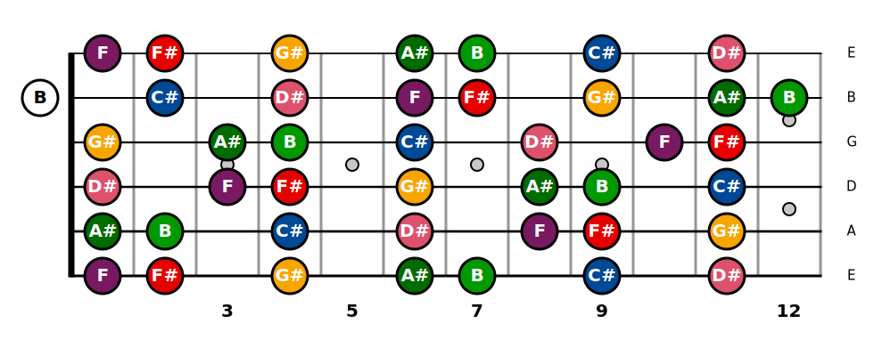
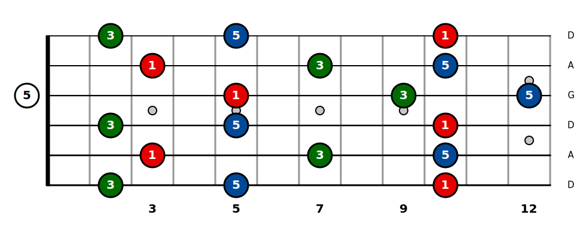
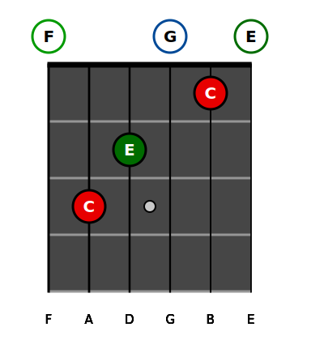

Programmation orienté objet
Héritage
Classe
Export module python
Structure (liste, table de hash)
FretBoardGtr est un projet de création de diagramme d'accord en format SVG fortement
personnalisable.
En effet, la plupart des outils de création de diagramme d'accord que l'on peut trouver sur Internet
utilise un accordage standard (EADGBE) et ne sont pas entièrement personnalisable.
Le but ici était de créer un outil open source qui permet de résoudre ces problèmes. Ainsi, le
module développé permet de :
- Créer des diagrammes d'accords personnalisables pour gaucher ou droitier
- Créer des diagrammes de gammes personnalisables
- D'avoir le nombre de cordes que l'on souhaite (Basse, guitare, Ukulele,
Guitare 8 cordes ...)
- Pouvoir utiliser n'importe quel type d'accordage
De plus à partir de l'accord que l'on donne, un algorithme permet de déterminer les notes de
l'accord en fonction de l'accordage. Aussi, il permet de connaître les intervalles en fonction d'une
note "Root". ( Par exemple savoir que sur la deuxième corde il s'agit d'une tierce mineur ou autre
etc). Il permet de déterminer l'enharmonie d'une gamme automatiquement et enfin il est possible
d'enregistrer l'image dans plusieurs formats différents (svg, pdf, png ...).
Installation
Le module est directement disponible sur les dépôts de Python vous pouvez y accéder sur ce
lien. Pour l'installer il faut déjà avoir le module
pip installé et ensuite écrire
pip install fretboardgtr
.
Classe mère, thèmes et méthodes
La classe mère FretBoardGtr définie tous les thèmes qui permettent de personnaliser les couleurs, la taille
des
ronds, la disposition des cordes etc.
Méthodes de base
Après avoir créé un objet (Voir dans les parties ScaleGtr et ChordGtr). On peut définir des méthodes basées
sur la
classe mère. Pour la suite, admettons que notre objet s'appelle
F
.
pathname()
Cette méthode permet de définir le chemin de sauvegarde du SVG.
F.pathname('Test.svg')
F.pathname('Test\Test.svg')
customtuning()
Cette méthode permet de définir un accordage particulier. C'est dans cette dernière qu'on va pouvoir définir
le
nombre de cordes et le nom des notes. Elle prend en paramètre une liste de chaînes de caractères avec le nom
des notes.
F.customtuning(['F','A','D','G','B','E'])
F.customtuning(['D','A','D','G','A','D'])
F.customtuning(['E','A','D','G'])
set_color()
Cette méthode est appelée pour modifier la couleur des notes par défaut. Les attributs possibles pour cette
méthode sont :
root, minorsecond, majorsecond, minorthird, majorthird, perfectfourth, diminishedfifth, perfectfifth,
minorsixth, majorsixth, minorseventh, majorseventh
F.set_color(root='yellow')
F.set_color(minorsecond='rgb(231, 0, 0)')
On peut remettre les valeurs par défaut avec la ligne suivante :
F.set_color(default_theme=True)
theme()
C'est dans cette méthode qu'on va pouvoir définir toutes les différentes personnalisations.
F.theme(show_note_name=True,color_scale=False)
On peut remettre tout les paramètres à zéro avec cette ligne de commande :
F.theme(default_theme=True)
Ci-dessous, la liste de tout ce qui est modifiable ainsi que leur valeur par défaut.
wf = 50 (width of fret)
hf = 70 (height of fret)
R = 20 (radius of circle )
background_color = 'rgb(255,255,255)'
fretcolor = 'rgb(150,150,150)'
strings_color = 'rgb(0,0,0)'
nut_color = 'rgb(0,0,0)'
fretsize = 3
string_same_size = False #(If False first string bigger than the last)
string_size = 3
dot_color = 'rgb(200,200,200)'
dot_color_stroke = 'rgb(0,0,0)' #(small dots on the neck)
dot_width_stroke = 2 #(small dots on the neck)
dot_radius = 7 #(small dots on the neck)
fontsize_bottom_tuning = 15 #(fontsize of the tuning)
fontsize_text = 20 #(Fontsize of text in circle)
open_circle_color = 'rgb(255,255,255)' # (for open string)
open_circle_stroke_color = 'rgb(0,0,0)' # (for open string)
open_circle_stroke_width = 3 # (for open string)
open_text_color = 'rgb(0,0,0)' # (for open string)
cross_color = 'rgb(0,0,0)' # (Cross when doesn't play string )
fontsize_cross = 20 # (Cross when doesn't play string )
fretted_circle_color = 'rgb(0,0,0)' # (for fretted string)
fretted_circle_stroke_color = 'rgb(0,0,0)' # (for fretted string)
fretted_circle_stroke_width = 3 # (for fretted string)
fretted_text_color = 'rgb(255,255,255)' # (for fretted string)
nut_height = 7
show_nut = True
first_fret = 0
last_fret = 12
show_tun = True
show_ft = True
color_scale = True # (for the Scale class)
open_color_scale=False # (for the Scale class)
show_note_name = False # (if show_not_name==True, show_degree_name is not considered )
show_degree_name = True
color_chord=True # (for the ChordGtr class)
open_color_chord=True # (for the ChordGtr class)
draw()
Cette méthode est appelée pour créer le diagramme à proprement parler. Il faut l'appeler avant d'enregistrer
l'image.
F.draw()
save()
Cette méthode est appelée pour enregistrer le diagramme. Si aucun attribut ne lui ai donnée alors le format
sera le svg. Sinon il faut le préciser avec le nom "extension".
F.save(extension='pdf')
F.save(extension='PNG')
Utilisation
ScaleGtr
La classe ScaleGtr permet de dessiner un diagramme de gamme horizontale.
Une fois l'installation du module réussie, on peut importer la classe ScaleGtr directement dans un script
from fretboardgtr import ScaleGtr
.
F=ScaleGtr(scale=["G","A","B","C","D","E","F#"],root="G")
F.customtuning(['F','A','D','G','B','E'])
F.draw()
F.save()
La première ligne permet de créer l'instance F avec deux attributs : le premier est la liste des notes que
l'on veut dans la gamme, et le deuxième est la fondamentale de la gamme.
Si aucune fondamentale n'est indiquée, la note par défaut sera un do. Cet attribut est important pour
pouvoir dessiner le diagramme avec les intervalles.
La deuxième ligne permet de définir un accordage. La troisième ligne trace le diagramme, plus précisément
elle appelle les différentes méthodes permettant de le tracer. La dernière ligne permet de le sauvegarder.
Attention, le chemin est par défaut : /default.svg, si un fichier du même nom existe il sera effacé.

On peut demander, avant d'appeler la méthode draw(), d'écrire les notes au lieu des intervalles :
F.theme(show_note_name=True)
.
On peut également appeler la méthode draw() en passant en paramètre une liste appelée fingering qui
permettra de
tracer un accord sur le diagramme de gamme. Cependant cette fonctionnalité n'est pas encore développée à
100%.
ScaleFromName et ChordFromName
Souvent, on ne connaît pas par coeur toutes les notes d'une gamme ou d'un accord complexe que l'on
souhaite dessiner. Ces deux objets permettent de calculer directement le nom des notes en fonction d'un
nom de gamme ou d'un nom d'accord. La liste de tout les noms est disponible sur ce lien. On
peut directement les passer en paramètre lors de la création de FretBoardGtr. Pour pouvoir les
utiliser il faut tout d'abord les importer :
from fretboardgtr import ScaleFromName, ChordFromName
F=ScaleGtr(ScaleFromName(root='F#',mode='Ionian'))
F.customtuning(['E','A','D','G','B','E'])
F.theme(show_note_name=True)
F.draw()
F.save()

F=ScaleGtr(ChordFromName(root='C',quality='M'))
F.customtuning(['D','A','D','G','A','D'])
F.draw()
F.save()

ChordGtr
La classe ChordGtr permet de dessiner un diagramme d'accord qui se base sur une liste des positions des
doigts.
Une fois l'installation du module réussie, on peut importer la classe GuitarGtr directement dans un
script
from fretboardgtr import ChordGtr
.
F=ChordGtr(fingering=[0,3,2,0,1,0],root="C")
F.customtuning(['F','A','D','G','B','E'])
F.draw()
F.save()
La première ligne permet de créer l'instance F avec deux attributs : le premier est la liste des
positions
des
doigts en commençant par la note la plus grave à gauche et la plus aigu à droite. Le deuxième est la
fondamentale de la gamme.
Comme pour ScaleGtr, Si aucune fondamentale n'est indiquée, par défaut cette note est un do.
La deuxième ligne permet de définir un accordage. La troisième ligne trace le diagramme, plus
précisément
elle appelle les différentes méthodes permettant de le tracer. La dernière ligne permet de le
sauvegarder.
Attention, le chemin est par défaut : /default.svg, si un fichier du même nom existe il sera effacé.
Un exemple un peu plus complet, qui permet de changer la couleur du fond, de changer le chemin de
sauvegarde
et
qui permet de définir un accordage serait le suivant :
F=ChordGtr(fingering=[0,3,2,0,1,0],root="C")
F.customtuning(['F','A','D','G','B','E'])
F.pathname('Test2.svg')
F.theme(show_note_name=True,background_color='rgb(70,70,70)')
F.draw()
F.save()
